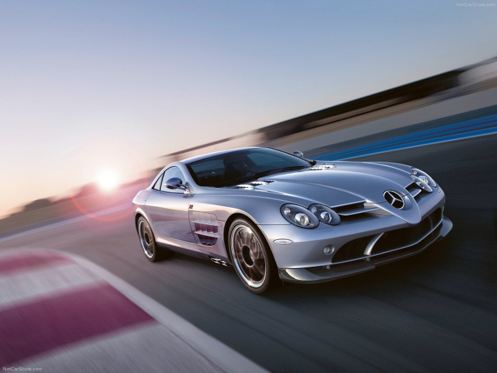

Mercedes-Benz SLR McLaren 722 Edition
Specifications
Power: 641 hp
Torque: 820 Nm
0 to 100 kph: 3.5 s
Top Speed: 337 kph
Weight: 1724 kg
Vehicle Type:
front engine, rear wheel drive, 2 passenger, 2 door coupe
Engine:
Type: Supercharged V8
Displacement: 5439 cc
Power: 641 hp @ 6500 rpm
Torque: 820 Nm @ 4000 rpm
Transmission: 5 automatic with manual shifting mode
Price: $480,000
Related Links
Official site
More info @ wikipedia
Wallpapers
Youtube
Reviews
- 

{kind=link}
{kind=link}
{kind=link}
{kind=link}
{kind=link}
{kind=link}
{kind=link}
{kind=link}
{kind=link}
{kind=link}
{kind=link}
{kind=link}
{kind=link}
{kind=link}
{kind=link}
{kind=link}
{kind=link}
{kind=link}
{kind=link}
{kind=link}
{kind=link}
The Mercedes-Benz SLR McLaren 722 Edition displays thoroughbred motor-racing attributes, having been developed in close cooperation with the motorsport specialists at the headquarters of the McLaren Formula-1 team in England. Featuring more than 300 modified components, the super sports car serves up a boost in output, more dynamic chassis tuning, improved aerodynamics and distinctly sporty interior appointments to thrill even the most demanding of sports-car enthusiasts.
For Mercedes-Benz, "SLR 722 Edition" was an obvious name for the new model variant as it evokes memories of the unforgettable victory achieved in 1955 by the British motor-racing legend Stirling Moss and his co-pilot Dennis Jenkinson at Mille Miglia - the classic Italian endurance race - behind the wheel of a Mercedes Benz 300 SLR with start number 722 (denoting the car's start time of 7.22 a.m.). Boasting an impressive output of 478 kW/650 hp, the SLR McLaren 722 Edition super sports car not only out-performs its historic forefather, it even outstrips the scintillating peak performance of the current SLR model - a technical masterstroke on the part of the engineers at Mercedes-Benz and McLaren. The new limited-edition series - only 150 models are being produced, for the most part hand-crafted, at McLaren in Woking - is the brand's response to calls from highly discerning SLR customers for even more sportiness combined with the same high level of everyday practicality.
At the heart of the Mercedes-Benz SLR 722 Edition is a 5.5-litre V8 supercharged powerplant assembled by hand at the Mercedes-AMG engine workshops in Affalterbach, Germany, based on the "One man, one engine" principle. Among the high-performance powerplant's major strengths are its extremely spontaneous response to accelerator pedal movements, dynamic torque build-up across the entire engine speed range and an unmistakable V8 sound.
Further modifications were made to influence the interplay of the engine with the gearshift. For each of the individually selectable transmission modes - M (Manual) and S (Sport) on the one hand and C (Comfort) on the other - there is now a different accelerator pedal characteristic curve which has been optimised in line with the very different operating conditions that apply in each case.
The end result is an extremely impressive set of performance figures, even by high-end super sports car standards: the Mercedes-Benz SLR 722 Edition completes the sprint from 0 to 100 km/h in a breathtaking 3.6 seconds (SLR 3.8 seconds), going on to achieve 200 km/h in just 10.2 seconds (SLR 10.6 seconds) and 300 km/h in a mere 28.0 seconds (SLR 28.8 seconds). Plus the top speed of 337 km/h is even higher than that of the current SLR (334 km/h).
New chassis set-up for further enhanced handling dynamics
One of the main driving forces behind the further improved performance of the Mercedes-Benz SLR 722 Edition is the retuned chassis. Development work at McLaren's Formula-1 headquarters was based on the SLR's proven aluminium chassis set-up. In the first phase of development, various chassis parameters, such as springing and damping, underwent a series of tests on the Formula-1 dynamometer in Woking. Then the Mercedes-Benz and McLaren engineers made further refinements and finalised the new set-up by performing an extensive series of tests on the road and, above all, on the race track. The stiffer spring rates and shock-absorber characteristics of the chassis (body lowered by 10 mm at both the front and rear) are what gives the SLR 722 Edition its increased directional stability and noticeably further enhanced handling dynamics. Body roll on bends has been reduced by over 20 percent, allowing the SLR 722 Edition to corner at even greater speeds.
New 19-inch forged-aluminium wheels also improve the handling dynamics of the special-edition model, their unique, palladium grey design highlighting the car's motor-racing heritage. Their low weight, compared to ordinary tires, reduces the unsprung masses, making the Mercedes-Benz SLR 722 Edition even more responsive. Plus the 19-inch wheels allow larger brake discs with a diameter of 390 mm to be fitted on the front axle. Hailing from the Italian manufacturer "Brembo", the new braking system combines with the carbon fibre-reinforced ceramic discs to provide a highly impressive deceleration rate which is fully in keeping with the SLR 722 Edition's scintillating all-round performance. Extensive tests were carried out to develop a new ESP® control system for this new brake configuration.
An aerodynamic work of art: even more downforce and an improved cd figure
Around 100 hours of meticulous work in the wind tunnel also helped boost the performance of the Mercedes-Benz SLR 722 Edition. Here the developers performed yet another technical masterstroke by increasing downforce whilst at the same time reducing the Cd (drag coefficient) figure. At higher speeds, lower aerodynamic drag generally means lower downforce.Not so in the case of the SLR 722 Edition though, which has an "airsplitter" at its front end. Consisting of carbon with a clear-coat finish, the distinctively shaped spoiler lip not only enhances aerodynamics, it also increases the downforce on the front axle by 128 percent. Small wheel spoilers, also finished in carbon, reduce air swirl at the rear axle, making for smoother airflow and optimising road feel. If the 13-percent increase in rear-end downforce is also added into the equation, the SLR 722 Edition provides 122 kg total downforce. In the 35° high-downforce position of the airbrake, the total downforce is increased by another 50 kg. The result: an even more reliable handling and more precise turn-in at high speeds.
In addition, the rear-mounted airbrake optimises directional stability and braking power. When the speed exceeds 120 km/h, it rises up at an angle that has been adjusted in line with the extremely dynamic performance of the new model. If the driver hits the brakes hard in an emergency, the airbrake is automatically raised. This dynamic modification increases rear-axle downforce within a fraction of a second, thus partially compensating for the dynamic axle load distribution during braking, which has a tendency to press towards the front axle.
A further factor which contributes to the distinctly sports-oriented configuration is the weight of the Mercedes-Benz SLR 722 Edition, which the engineers have reduced by around 44 kg. A lighter oil tank and damper bodies made from aluminium, which have the added benefit of improving the vibration response of the unsprung masses, make for less weight. Furthermore, various parts and components have been replaced by carbon, including in the footwell and at the rear wheel arches. Last but not least, optimised panelling and insulating materials also have a positive effect on the vehicle weight. Yet for all these measures, the high levels of comfort, safety and practicality that have become Mercedes hallmarks remain unaffected.
The complete performance package at the heart of the SLR 722 Edition really comes into its own when matched with a sporty driving style. This is when the true benefits of the improved cornering ability, the higher lateral acceleration and the even more agile handling really make themselves felt.
Sporty design through and through
In terms of exterior design, the Mercedes-Benz SLR 722 Edition features discreet sporty touches, thereby satisfying the desires of keen gentleman drivers and affluent sports-car collectors - the core target group - to the letter. The new-look 19-inch light-alloy wheels afford an uninterrupted view of the red-painted brake callipers and the large brake discs, emphasising the sheer power and performance that underpins every aspect of the SLR. In addition, individual components in carbon with a clear-coat finish highlight the close ties with Formula 1. Plus the grille-style design of the black-painted air outlets on the bonnet, not to mention the palladium grey-trimmed front- and tail-light clusters, blend in perfectly with the carbon-fibre look. The SLR 722 Edition is available with a crystal antimony grey paint finish which creates a vivid impression of depth and produces an extremely intensive-looking surface structure.
Moving inside, the sports bucket seats, upholstered in a combination of semi-aniline leather and Alcantara, offer excellent lateral support, while the colour contrast provided by the distinctive "300-SL-red" stitching throughout the interior, the 722 insignia on the head restraints and the red seat belts is designed to deliver maximum appeal. The attractive material mix comprising semi-aniline leather and Alcantara, which gives the interior its characteristic look and feel, also features prominently on the roof lining and door panels. Frequently used controls, such as the shift lever and handbrake lever, are trimmed in easy-grip, moisture-absorbing suede. The sporty design philosophy that underpins the Mercedes-Benz SLR 722 Edition is also reflected by the widespread use of carbon throughout the interior. This material, straight from the world of Formula 1, lends the centre console an extremely puristic look.
The new-look instrument cluster focuses the driver's attention on the key vehicle data, featuring classic-style dials with a signal-red background. Plus the practicality of the multifunction display is augmented by an extremely sporty touch in the shape of the AMG RACETIMER. Finally the designers paid special attention to the steering wheel as the key link between driver and car: with its combined leather/suede trim, the rim is extremely easy to grip and helps to driver to remain master of the situation when driving at high speed.